Інструкція користувача
«Планування продажів» — внутрішня платформа EMET для планування і контролю продажів. Цей документ покриває ключові сценарії для трьох ролей: Менеджер · Регіональний керівник · Директор.
Як зайти у систему
Відкрийте у браузері: https://sales-planning-lyart.vercel.app/ (рекомендуємо додати у закладки).
Введіть той самий логін і пароль, що у СРМ Зустрічі. Окремий пароль не створюється.
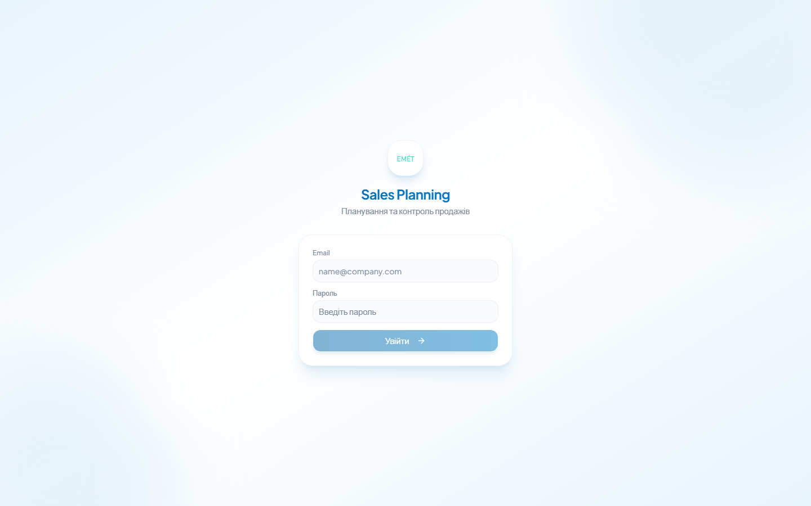
Періоди і фільтри
У верхньому правому куті — фільтр періоду. За замовчуванням ви бачите дані за поточний місяць.
- «На сьогодні» (live mode, синій кружок) — факт оновлюється з 1С у реальному часі. У цьому режимі форма у read-only.
- Конкретна дата (наприклад «04.05.2026») — факт станом на ту дату. Можна редагувати план.
- «Весь місяць» у dropdown-меню — повний підсумок за обраний місяць.
Що означають кольори
| Колір | Що означає |
|---|---|
| Зелений | «В плані» — % виконання вище або дорівнює нормі на дату |
| Червоний | «Відставання» — % виконання нижче норми |
| Жовтий | Прогноз / попередження |
Норма = % робочих днів, які пройшли у місяці. Наприклад, на 5-те число травня (3 робочі дні з 21) норма = ~14%.
У картці «Виконання» є дві лінії норми:
- Норма на сьогодні (або на дату фільтру) — % робочих днів пройдено по той день включно. Це орієнтир «де ви маєте бути зараз».
- Норма на ранок — % робочих днів пройдено станом на вчора. Дозволяє побачити baseline: «що було вчора → що зараз».
Менеджер Мої клієнти
«Мої клієнти» — це ваш щоденний робочий стіл, не лише раз на місяць. Тут уся ваша клієнтська база в одному місці: відкрийте картку клієнта перед дзвінком чи зустріччю — і одразу бачите, що він купував, що в плані й на що його варто активувати.
Перемкнутися: кнопка «Мої клієнти» у верхній панелі (поряд з «Планування»).
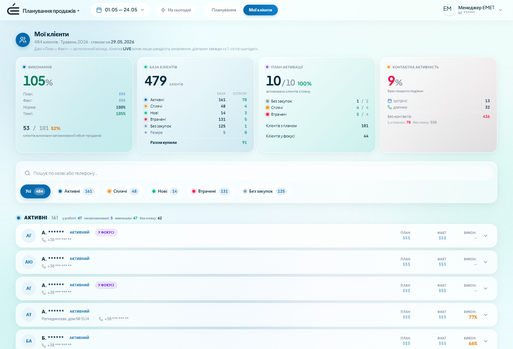
4 картки-підсумки зверху
- Виконання — ваш план / факт / % за місяць + скільки клієнтів виконали запланований обсяг продажів.
- База клієнтів — скільки у вас клієнтів по кожній категорії (Активні / Сплячі / Нові / Втрачені / Без закупок) і скільки з них вже купили цього місяця.
- План активації — план з 1С: скільки сплячих / втрачених / без-закупок клієнтів треба «розбудити» цього місяця, і скільки вже активовано.
- Контактна активність — скільки бази покрито подіями (зустрічі + дзвінки) і скільки клієнтів лишилось без жодного контакту.
Пошук і фільтри
- Пошук — по назві клієнта або номеру телефону (тільки у вашій базі).
- «По всій базі» (кнопка справа) — глобальний пошук по всіх клієнтах компанії, не тільки ваших. Корисно якщо клієнт існує у 1С, але закріплений за іншим менеджером або не закріплений ні за ким. Знайдете → побачите всю інформацію → можна запланувати зустріч.
- «+ Новий клієнт» (кнопка справа) — створити нового клієнта, якого взагалі немає у 1С. Заповнюєте ПІБ + телефон + адресу + освіту + документи → клієнт реєструється у 1С під вашим логіном і одразу з'являється у вашому списку.
- Фільтри по категоріях — клік на «Активні / Сплячі / Нові / Втрачені / Без закупок» показує тільки цю групу. «Клієнтів з планом» і «у фокусі» — швидкі фільтри з карток.
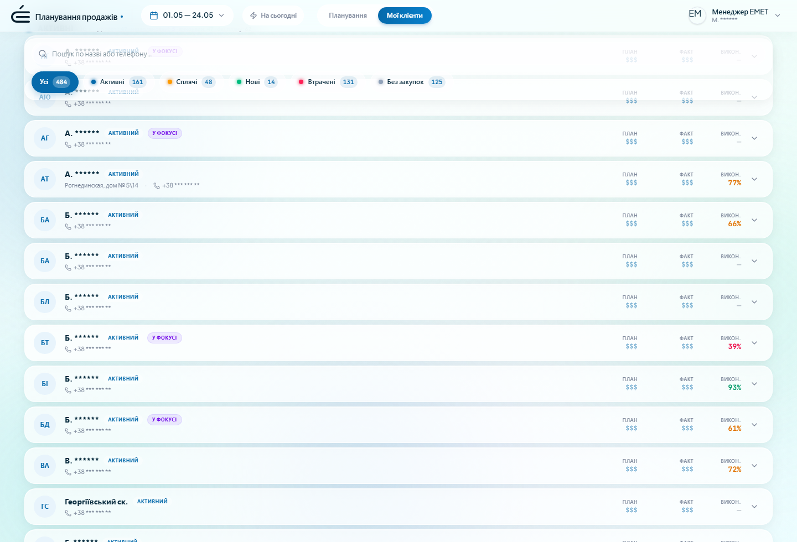
Картка клієнта (клік по рядку)
Натисніть на клієнта — рядок розгорнеться й покаже все для розмови:
- План × Факт по брендах — що з цим клієнтом у плані цього місяця і скільки вже куплено, по кожній торговій марці. Бейдж показує статус: «В плануванні» / «Поза плануванням» / «Виконано».
- Покупки за останні 6 місяців — історія по брендах помісячно: видно, що клієнт брав регулярно, а що перестав (привід запропонувати).
- Події — останні зустрічі, дзвінки та семінари по клієнту.
- Фокуси та інфо — діючі фокуси по клієнту, телефон, адреса, документи.
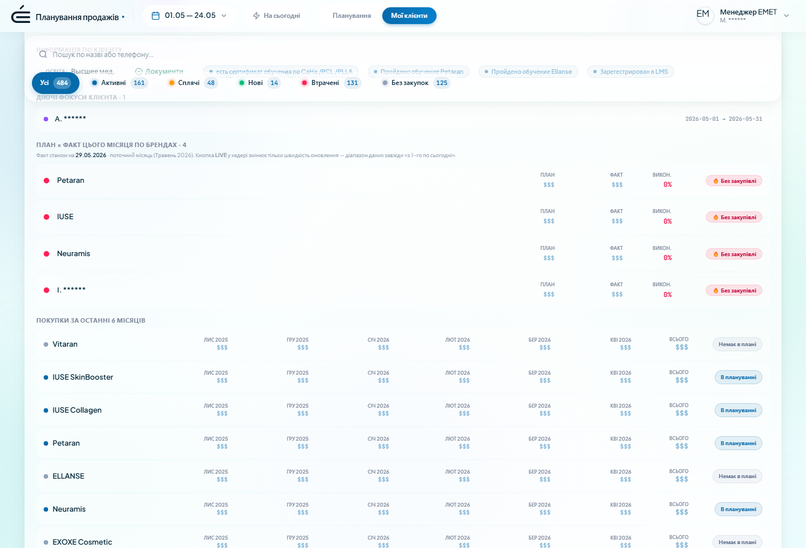
Менеджер Зустрічі
Блок «Зустрічі» замінює застосунок СРМ Зустрічі у щоденній роботі менеджера. Тепер планування, проведення і завершення зустрічей зроблено всередині однієї системи разом з картками клієнтів і плануванням. Усе пишеться у 1С автоматично — ви бачите ті ж дані що й директор з його 1С.
Перемкнутися: кнопка «Зустрічі» у верхній панелі.
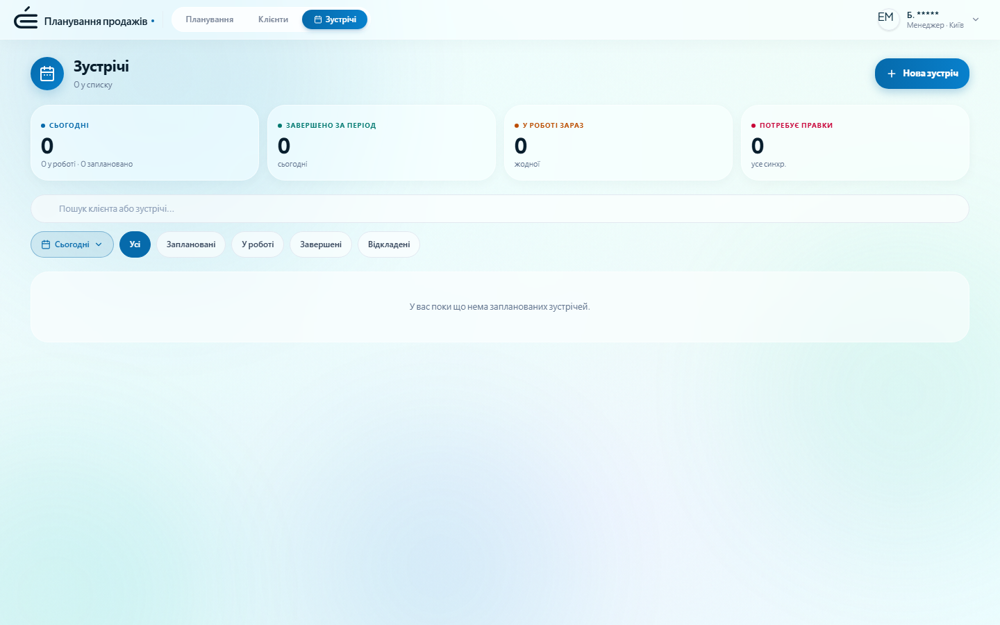
4 KPI-картки зверху
- Сьогодні — скільки зустрічей призначено на сьогодні з розбивкою «у роботі / заплановано».
- Завершено за період — скільки вже завершено за обраний фільтр (поточний місяць, тиждень тощо).
- У роботі зараз — скільки зустрічей зараз у статусі «Розпочато». Це активні відрядження менеджера.
- Потребує правки — зустрічі що не синхронізувалися з 1С (рідко — лише при тимчасових збоях зв'язку).
Фільтри по даті і статусу
- Дата: Сьогодні · Завтра · Поточний тиждень · Минулий тиждень · Поточний місяць · Минулий місяць · Свій діапазон. За замовчуванням — «Сьогодні».
- Статус: Усі · Заплановані · У роботі · Завершені · Відкладені.
- Пошук — по назві клієнта або змісту зустрічі.
Створення нової зустрічі
Натисніть «+ Нова зустріч» у верхньому правому куті.
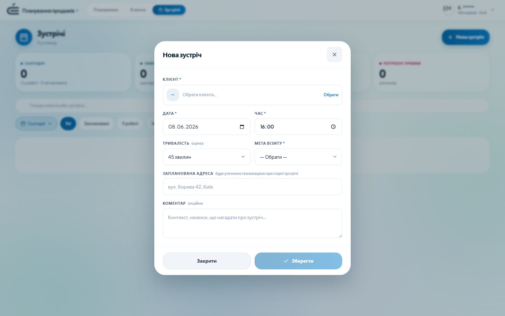
- Клієнт — кнопка «Обрати» відкриває пошук. Можна вибрати свого клієнта (з повної бази менеджера) або глобальний пошук по всій компанії.
- Дата і час — за замовчуванням сьогодні + найближча кругла година. Можна змінити.
- Тривалість — 30 / 45 / 60 / 90 хв або своя цифра. За замовчуванням 45 хв.
- Мета візиту — список з 1С (Знайомство, Підтримка, Активація, тощо). Обирається зі списку — потім видно у звіті директору.
- Запланована адреса (необов'язково) — куди їдете. Підказує клієнту як вас впізнати.
- Коментар (необов'язково) — нагадування собі: контекст, нюанси, що обговорити.
- Зберегти — система чекає 5-15с поки 1С підтвердить створення, потім зустріч з'являється у списку зі статусом «Заплановано». Якщо 1С повертає помилку, вам показується чому — і зустріч не створюється у системі (ніяких «фантомів»).
Пошук клієнта
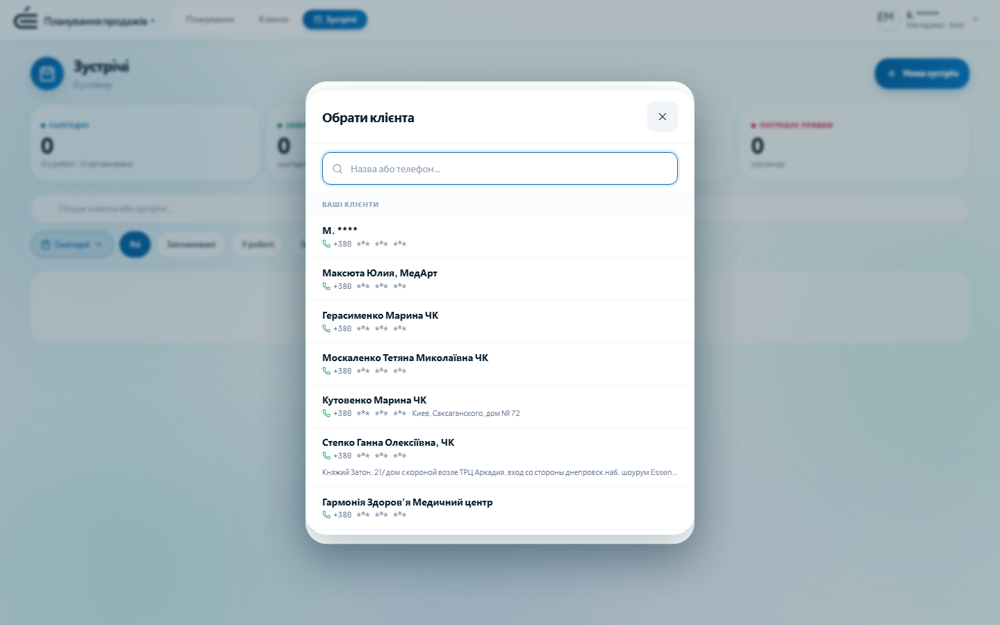
Розпочати зустріч
Коли ви прийшли до клієнта — на картці зустрічі натисніть «Розпочати». Система:
- Запитує геолокацію (браузер попросить дозволу один раз). Адреса фіксується автоматично — це аналог «чекіну» у відрядженні.
- Якщо GPS не доступний — можна ввести адресу вручну (помічається як «manual»).
- Зустріч переходить у статус «У роботі», з'являється таймер.
- Це передається у 1С одразу — директор бачить «зараз менеджер на зустрічі з X у Z».
Завершити зустріч
Коли зустріч закінчилась — натисніть «Завершити» на картці. Відкриється діалог підсумків:
- Геолокація завершення — теж автоматично (можна вручну).
- Анкета клієнта — короткий чек-лист: що обговорили, які препарати показали, чи є інтерес. Структура анкети задається в 1С й може відрізнятися по бренду.
- Коментар — підсумок розмови. Це те, на що ви будете дивитися перед наступним візитом.
Натисніть «Зберегти» — зустріч переходить у статус «Завершено», всі дані синхронізуються у 1С.
Перенести зустріч
Якщо клієнт попросив перенести — на картці зустрічі: «…» → «Перенести». У діалозі:
- Виберіть нову дату і час.
- До коментаря автоматично додасться «Перенесено зі старої дати DD.MM.YYYY» — це історія зміни.
- Зустріч лишається у списку зі статусом «Заплановано» на нову дату; 1С отримує оновлення одразу.
Скасувати зустріч
Якщо зустріч взагалі не відбудеться: «…» → «Скасувати». Зустріч позначається статусом «Скасовано» — лишається у вашій історії й у 1С (не видаляється безслідно), але не блокує час у розкладі.
• Зайти зранку → побачити список на сьогодні → під час кожної зустрічі: Розпочати → Завершити.
• Кінець місяця → фільтр «Минулий місяць» → пройти повз завершені, додати коментарі якщо щось не дописали.
• Звичайний день → фільтр «Поточний тиждень» → планування часу + переноси якщо щось зсунулось.
Менеджер Дашборд
Після входу ви бачите свій особистий дашборд. Зверху — 4 hero-картки з ключовими цифрами, нижче — список 9 торгових марок.
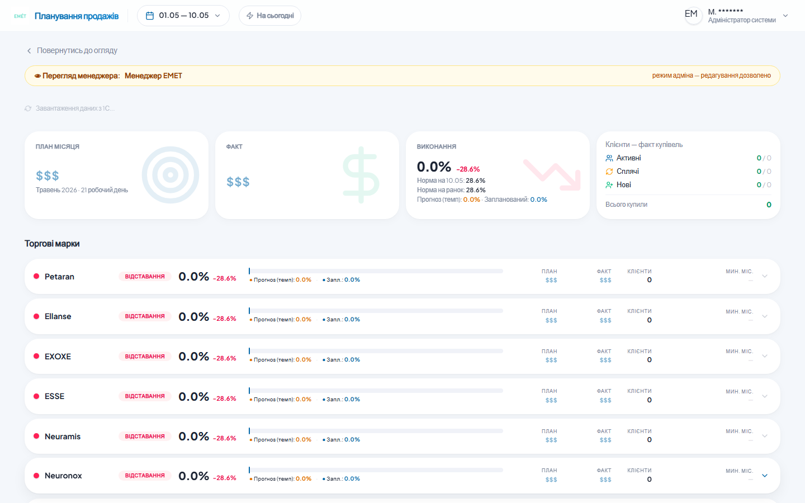
Hero-картки (зверху)
- План місяця — сума по всіх брендах, яку треба зробити за місяць
- Факт — наростаюча сума продажів з 1С + динаміка vs минулий місяць
- Виконання — % факту до плану + норма + прогноз до кінця місяця
- Клієнти — факт купівель — скільки ваших активних/сплячих/нових клієнтів вже купили щось у цьому місяці
Торгові марки (рядки)
Кожен рядок — окремий бренд. Що ви бачите:
- Кружок зліва — статус: зелений «В плані» або червоний «Відставання»
- % — поточне виконання (факт / план)
- Прогноз — куди прийде у кінці місяця при поточному темпі
- План / Факт / Клієнти — конкретні цифри
- Мин. міс. — для порівняння
Менеджер Бренд — деталізація
Клік по будь-якому рядку бренда відкриває розширений вигляд із розкладом по сегментах клієнтів.
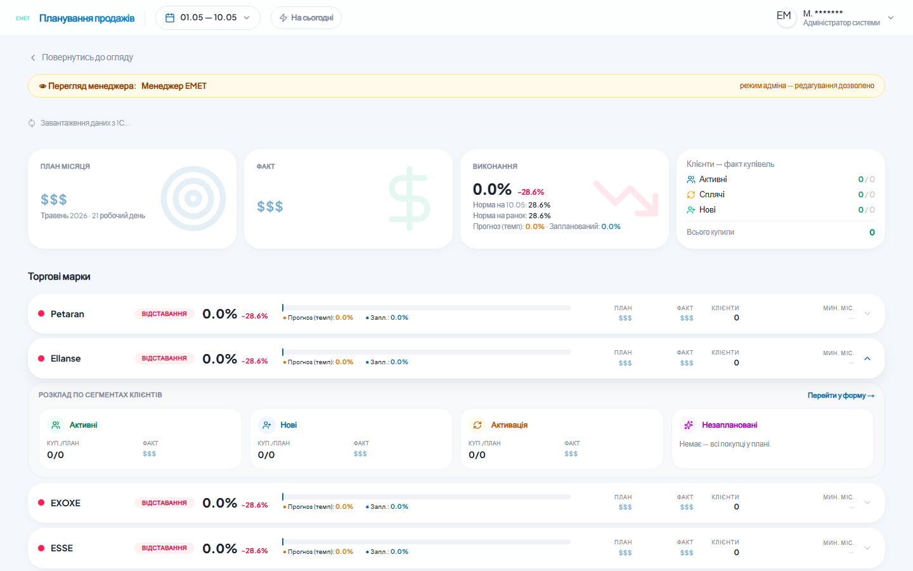
Чотири блоки всередині:
- Активні — купили цей бренд за останні 3 місяці
- Нові — нові клієнти у вашій базі
- Активізація — Сплячі / Втрачені / Без закупок (потенціал для повернення)
- Незаплановані — купують без плану, потрібно врахувати у наступному циклі
Щоб реально планувати — натисніть «Перейти у форму →» праворуч.
Менеджер Форма планування
Форма має 3 секції: Hero-метрики бренда, Дані по клієнтах по ТМ, Прогноз по активних клієнтах, Закриття розриву.
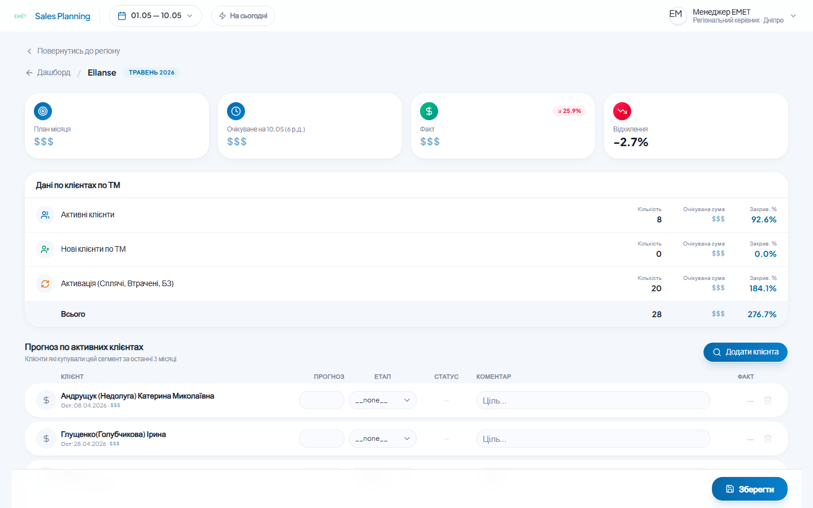
Менеджер Прогноз по активних
Список ваших активних клієнтів за обраним брендом. Система автоматично підставляє суму останньої покупки як стартовий прогноз — ви просто корегуєте.
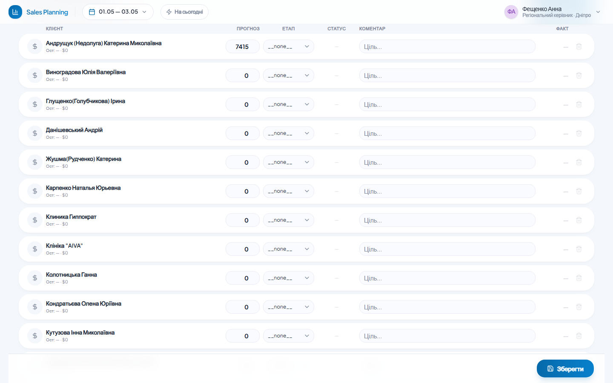
Колонки
- Клієнт — імʼя + дата і сума останньої покупки
- Прогноз — скільки очікуєте від нього у поточному місяці
- Етап — як збираєтесь з ним працювати: 📞 Дзвінок 💬 Мессенджер 📅 Зустріч 🎓 Навчання
- Статус — позначка про виконання етапу
- Коментар — конкретна ціль або деталі (вручну)
- Факт — реальна сума продажів за період (з 1С)
Кнопка «Додати клієнта» вгорі справа — для додавання клієнта якого нема у списку (наприклад новий або сплячий, з якого ви плануєте отримати покупку).
Менеджер Клієнти «без плану» (0)
Іноді клієнт у списку є, але цього місяця ви на нього не плануєте — не хочете видаляти, бо пам'ятаєте про нього на майбутнє. Для таких клієнтів просто поставте суму 0 у колонці «Прогноз» (або «Потенціал» для блоку «Закриття розриву»).
- Поруч з іменем з'являється сірий тег «без плану»
- Рядок сортується нижче активних — щоб око бачило хто реально планується
- Етап, статус і коментар у такого рядка все одно доступні — можна заповнити для довідки
Що це міняє у звітності
- Лічильник клієнтів бренду (на дашборді: «КЛІЄНТИ» / «Активні: 0/N») — клієнт з 0 не зараховується
- Сума «Очікувано»/«Запл.» — рядок з 0 не додає нічого до суми
- Готовність планування у директора — бренд де всі рядки з 0 показується як не заповнений
- Факт продажу — якщо клієнт «без плану» зробить покупку, він автоматично з'явиться у блоці «Незаплановані покупці» на вашому дашборді (drill-down бренду). Тобто ви побачите неочікувану покупку і зможете відреагувати.
Менеджер Закриття розриву
Якщо ваш план + поточні прогнози не покривають план — система рахує розрив і показує сплячих/втрачених клієнтів які можуть його закрити.
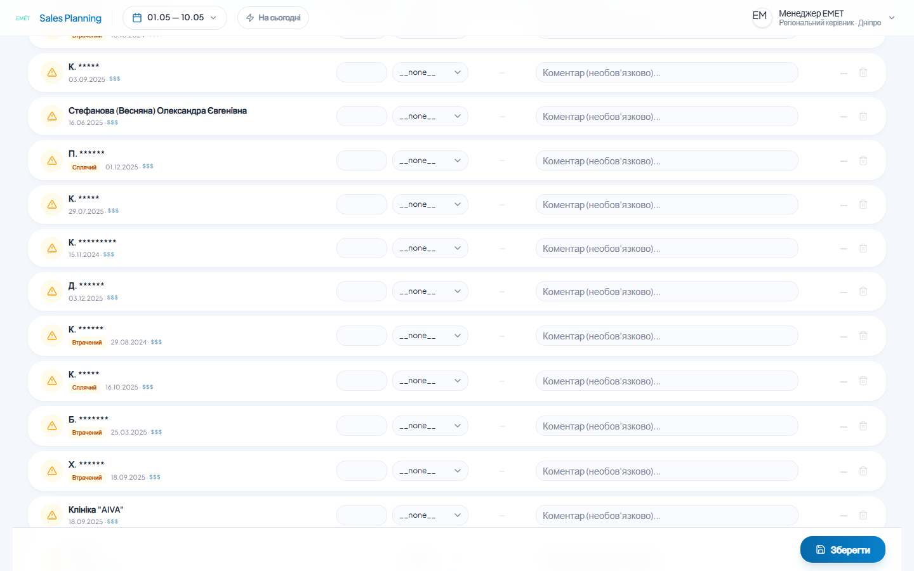
Колонки аналогічні «Прогнозу», тільки «Прогноз» замінено на «Потенціал» — скільки очікується якщо повернути клієнта.
Менеджер Чернетка і фіналізація
Внизу форми є дві кнопки: «Зберегти чернетку» (синя) і «Фінальне збереження» (зелена). Це два окремі етапи планування.
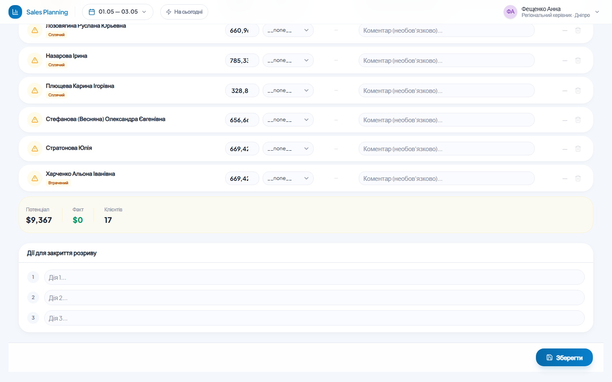
Зберегти чернетку
- Можна зберігати скільки завгодно — кожен раз як щось правите. План залишається «у роботі» і завжди можна повернутись.
- Поряд з кнопкою показано «Збережено: прогноз N, розрив M» — точна кількість рядків що потрапили у БД (легше відловити порожні saves).
- Над кнопкою — «Остання чернетка: 13 травня о 14:23» (як давно зберігали).
- «Заплановано» у hero (план компанії / регіону) — показує тільки фіналізовані плани
- «Запл. %» на брендах — теж тільки фінал
- «Розклад по категоріях клієнтів» — у «Активних / Активізації» нулі поки нема фіналу
- «Готовність планування» у Директора — ви позначені «у роботі / частково» поки чернетка, «✓ ФІНАЛ» лише після фіналу
Фінальне збереження
Коли план готовий і ви впевнені — натискаєте «Фінальне збереження». Це закріплює план: суми, список клієнтів, етапи фіксуються — нічого більше не можна змінити (крім коментарів).
- Якщо сума прогнозу + закриття розриву менша за план місяця — з'явиться діалог «Увага — план неповний» з різницею і відсотком планування. Можна або повернутися і дописати, або підтвердити «Так, фіналізувати».
- Після фіналізації зверху форми з'являється зелений банер: «✓ Фіналізовано 13 травня о 14:30. Для змін зверніться до IT».
- Поля сум, кнопки «+Додати клієнта» і «Видалити» — заблоковані. Коментарі та позначка «Виконано» — далі редагуються щоб ви могли коригувати ціль після дзвінків/зустрічей.
Менеджер Графік планування
Планувати можна тільки перші N днів місяця (за замовчуванням — перші 5). Після цього форма блокується для редагування — менеджер бачить план, але не може його змінювати.
- Стандартне закриття (день > N) → рожевий банер 🔒 «Планування закрите. Вікно — перші 5 днів місяця». Поля недоступні.
- «Технічні роботи» (амбер банер 🔧) — планування тимчасово закрите. IT-департамент повідомить коли відкриється.
Масове видалення (декілька клієнтів)
Якщо треба прибрати одразу багато клієнтів — використовуйте чекбокси:
- Поставте галочки зліва від клієнтів, яких треба видалити (у блоці «Прогноз» або «Закриття розриву»).
- Або натисніть чекбокс у заголовку колонок — виділяться всі активні клієнти секції.
- Згори з'явиться червона смуга «Обрано: N» з кнопкою «Видалити обраних».
- Натисніть «Видалити обраних» → підтвердіть → клієнти зникнуть.
- Не забудьте натиснути «Зберегти» внизу форми, щоб зміни записались у БД.
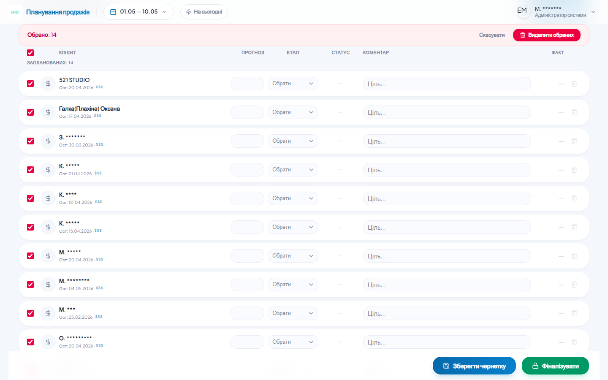
Регіональний керівник Дашборд регіону
РМ бачить агрегований стан свого регіону + список менеджерів з персональним прогресом + бренди-у-розрізі-менеджерів.
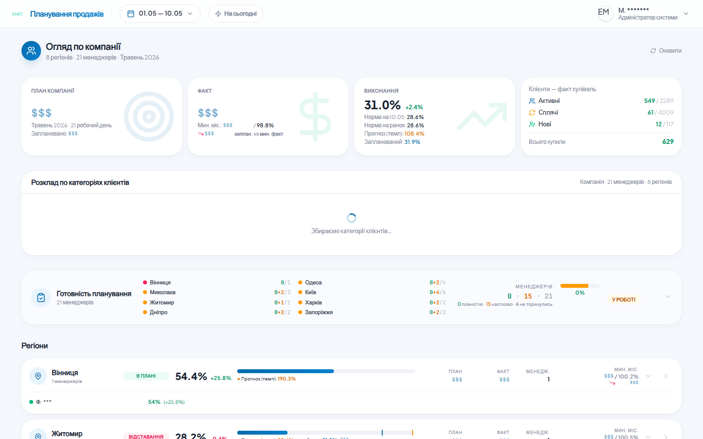
Hero-картки (як у менеджера, але для регіону)
- План регіону / Факт / Виконання — сума по всіх менеджерах
- Клієнти — факт купівель — агрегат по всіх менеджерах регіону
Регіональний керівник Менеджери регіону
Список усіх ваших менеджерів зі статусом виконання. Менеджери без активного плану не показуються.
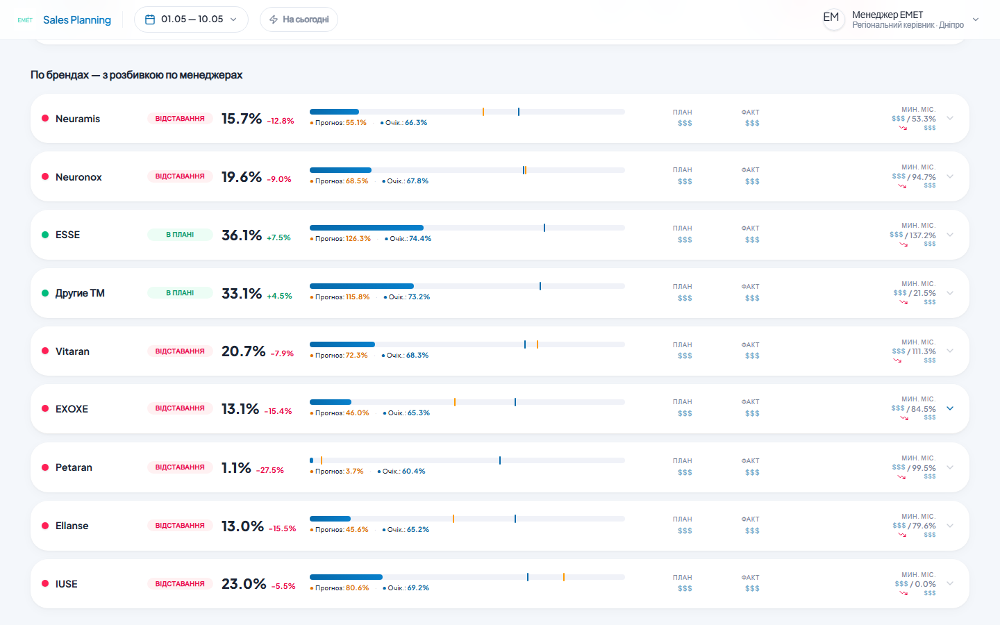
Регіональний керівник Drill-down
Два шляхи перейти у план конкретного менеджера:
- З секції «Менеджери» — клік по рядку менеджера → відкривається його повний дашборд (read-only).
- З секції «По брендах» — клік по рядку бренда розгортає склад по менеджерах. Клік по конкретному менеджеру → відкривається форма планування саме за тим брендом.
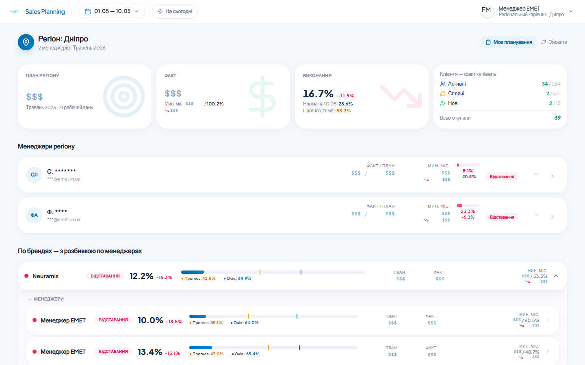
Регіональний керівник Моє планування
РМ — це теж менеджер. У вас є свої клієнти і свій план. Кнопка «Моє планування» вгорі дашборду відкриває ваш особистий планувальник — повний дашборд з 9 брендами і формою.
Кнопка «Повернутись до регіону» вгорі повертає до огляду регіону.
Директор Огляд по компанії
Директор бачить зведення по усіх 8 регіонах компанії. Структура аналогічна РМ, але масштаб — компанія цілком.
· Hero-метрики — по компанії (не регіону)
· Замість «Менеджерського рейтингу» — список 8 регіонів через RegionAccordion
· «По брендах» — з розбивкою по регіонах (не менеджерах)
Директор Готовність планування
Окрема картка на дашборді: скільки менеджерів вже завершили планування. Показує загальний прогрес по компанії + розклад по регіонах + drill-down до конкретного менеджера.
Облік ведеться за менеджерами, не за «документами». Кожен менеджер має один з трьох статусів:
- 🟢 Повністю фіналізував — закрив план для всіх 9 брендів.
- 🟡 Частково — почав планування хоча б по одному бренду, але не всі фіналізовані.
- ⚪ Не торкнувся — жодного бренду не заповнив.
У header картки видно загальне «N · M · K» (повністю · частково · не торкнулись). Mini-list 8 регіонів показує по кожному «N+M/Z» (фіналізували + частково / всього менеджерів). Розкривши регіон — побачите імена з статусом і списком «чернетка: бренд1, бренд2» / «не заповнено: бренд3».
Директор Регіони
Кожен регіон у вигляді картки з статусом + список менеджерів регіону у розгорнутому стані. Клік по регіону → переходите в RM-дашборд цього регіону.
- З розгорнутого регіону — клік по менеджеру у міні-списку → одразу його план
- З картки регіону — клік по «→» іконці справа → детальний огляд регіону
Директор По брендах
Той самий blок «По брендах» але з розбивкою по регіонах (не менеджерах). Корисно щоб побачити який регіон за яким брендом сильніший.
Клік по регіону всередині розгорнутого бренду → переходите у деталі цього регіону за тим брендом.
Часті питання
Не бачу свого регіону / менеджера
Перевірте у 1С — чи закріплений правильний логін за регіоном/підрозділом. Якщо потрібно — попросіть 1С-розробника перевірити.
Цифри не співпадають з 1С
Перевірте дату фільтра (вгорі справа). Live-mode = на сьогодні, фільтр = на конкретну дату. Часто це причина різниці.
Клієнт відсутній у списку
«Активні клієнти» = купували цей бренд у трьох календарних місяцях перед плановим. Тобто для травня — у лютому/березні/квітні. Якщо клієнт давніше — шукайте у «Закритті розриву». Якщо взагалі немає — натисніть «Додати клієнта» і виберіть з повного списку.
Чому категорії «Активні / Закриття розриву» не змінюються коли клієнт купує всередині місяця?
Категорія клієнта фіксується на ніч перед плановим місяцем і не змінюється до кінця місяця — щоб цифри у звітності керівників не «плавали» якщо ви відкриваєте форму 2-го, 5-го чи 20-го числа. Купівля у плановому місяці враховується як факт виконання плану, а не як зміна категорії клієнта.
Що означає тег «без плану» біля клієнта?
Це клієнт у списку з прогнозом 0 — ви його не плануєте цього місяця, але тримаєте у списку щоб не загубити з очей. Він не входить у лічильник запланованих клієнтів. Якщо у нього раптом з'явиться факт продажу, ви побачите його у блоці «Незаплановані» на дашборді бренду.
Зберіг план — куди він йде?
Прогноз зберігається у захищеній БД компанії. Доступ — тільки за вашим логіном і у вашого керівника. Дані 1С при цьому не зачіпаються.
Чи можна відкотити збереження?
Останнє натискання «Зберегти» перезаписує попередні. Версіонування немає, тому видалені клієнти зникають. Перш ніж тиснути «Зберегти» переконайтесь що все правильно.
Зустріч створив, а у 1С її немає
Перевірте, чи з'явилось у вас повідомлення про помилку при кліку «Зберегти». Якщо системa показала «1С: …» — це означає що 1С відмовилась прийняти запис (зазвичай через неповні дані, наприклад порожній клієнт). Зустріч у такому разі НЕ записується ані у нас, ані у 1С — ніяких «фантомів». Спробуйте ще раз з повністю заповненою формою.
Натиснув «Розпочати», але GPS не визначається
Браузер запитує дозвіл на геолокацію один раз. Якщо ви випадково натиснули «Заборонити» — потрібно зайти в налаштування браузера → дозволи цього сайту → дозволити локацію. На iOS — Налаштування → Safari → Локація. Альтернатива: ввести адресу вручну у поле «Адреса старту».
Що означає статус «Потребує правки» у KPI-картках
Це зустрічі, для яких 1С не змогла прийняти оновлення (зрідка трапляється при тимчасовому збої зв'язку з 1С). Зустріч лишається у вашому списку, помічена жовтим тегом «Не синхр.» — можна спробувати дію ще раз, система автоматично повторить запит до 1С.
Поки клієнти підгружаються — нічого не показано
Тепер у формі є спіннер «Завантажуємо клієнтів з 1С…». Зачекайте 2-3 секунди — список з'явиться. Якщо не з'являється довго — оновіть сторінку.
Планування продажів · EMET · 2026
Питання та пропозиції — IT-департамент